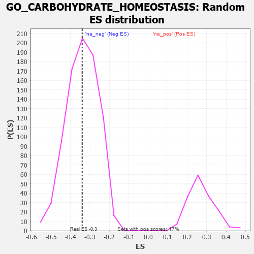

| | | Dataset | 7d |
| Phenotype | NoPhenotypeAvailable |
| Upregulated in class | na_neg |
| GeneSet | GO_CARBOHYDRATE_HOMEOSTASIS |
| Enrichment Score (ES) | -0.34021866 |
| Normalized Enrichment Score (NES) | -1.0033805 |
| Nominal p-value | 0.49579832 |
| FDR q-value | 0.8699258 |
| FWER p-Value | 1.0 |
Table: GSEA Results Summary
 Fig 1: Enrichment plot: GO_CARBOHYDRATE_HOMEOSTASIS
Fig 1: Enrichment plot: GO_CARBOHYDRATE_HOMEOSTASIS
Profile of the Running ES Score & Positions of GeneSet Members on the Rank Ordered List
| PROBE | GENE SYMBOL | GENE_TITLE | RANK IN GENE LIST | RANK METRIC SCORE | RUNNING ES | CORE ENRICHMENT | | 1 | IRS1 | | | 98 | 1.659 | 0.0399 | No |
| 2 | ADCY8 | | | 124 | 1.418 | 0.0813 | No |
| 3 | CSRP3 | | | 161 | 1.186 | 0.1142 | No |
| 4 | LRP1 | | | 470 | 0.648 | 0.0957 | No |
| 5 | SRF | | | 542 | 0.615 | 0.1061 | No |
| 6 | PYGL | | | 882 | 0.510 | 0.0794 | No |
| 7 | RMI1 | | | 886 | 0.509 | 0.0950 | No |
| 8 | MEN1 | | | 1003 | 0.483 | 0.0956 | No |
| 9 | AKT1 | | | 1040 | 0.476 | 0.1060 | No |
| 10 | FOXK2 | | | 1081 | 0.467 | 0.1157 | No |
| 11 | G6PC | | | 1121 | 0.459 | 0.1252 | No |
| 12 | LRP5 | | | 1769 | 0.342 | 0.0543 | No |
| 13 | GATA4 | | | 1837 | 0.330 | 0.0562 | No |
| 14 | FOXK1 | | | 1859 | 0.326 | 0.0639 | No |
| 15 | NCOA5 | | | 1884 | 0.322 | 0.0710 | No |
| 16 | BRSK2 | | | 1979 | 0.308 | 0.0688 | No |
| 17 | FOXO4 | | | 2004 | 0.304 | 0.0753 | No |
| 18 | RAF1 | | | 2011 | 0.303 | 0.0841 | No |
| 19 | SIN3A | | | 2361 | 0.251 | 0.0480 | No |
| 20 | PCK2 | | | 2823 | 0.180 | -0.0046 | No |
| 21 | ANO1 | | | 2982 | 0.152 | -0.0197 | No |
| 22 | PAX6 | | | 3170 | 0.127 | -0.0393 | No |
| 23 | FIS1 | | | 3654 | 0.051 | -0.0987 | No |
| 24 | IGF1R | | | 3970 | -0.002 | -0.1384 | No |
| 25 | HNF4A | | | 4157 | -0.034 | -0.1608 | No |
| 26 | PDX1 | | | 4179 | -0.038 | -0.1623 | No |
| 27 | ENY2 | | | 4195 | -0.041 | -0.1629 | No |
| 28 | USF1 | | | 4296 | -0.059 | -0.1736 | No |
| 29 | OPA1 | | | 4330 | -0.065 | -0.1757 | No |
| 30 | CMA1 | | | 4580 | -0.114 | -0.2036 | No |
| 31 | TRA2B | | | 4962 | -0.191 | -0.2457 | No |
| 32 | CSMD1 | | | 5377 | -0.290 | -0.2888 | No |
| 33 | SIDT2 | | | 5542 | -0.331 | -0.2991 | No |
| 34 | CDK16 | | | 5869 | -0.425 | -0.3268 | Yes |
| 35 | STK11 | | | 5922 | -0.443 | -0.3195 | Yes |
| 36 | PTPRN | | | 6007 | -0.474 | -0.3151 | Yes |
| 37 | XBP1 | | | 6011 | -0.475 | -0.3006 | Yes |
| 38 | RAC1 | | | 6036 | -0.484 | -0.2883 | Yes |
| 39 | INSR | | | 6204 | -0.538 | -0.2925 | Yes |
| 40 | TRPM4 | | | 6390 | -0.612 | -0.2966 | Yes |
| 41 | TRPV4 | | | 6515 | -0.668 | -0.2912 | Yes |
| 42 | MPC2 | | | 6683 | -0.753 | -0.2885 | Yes |
| 43 | PIM3 | | | 6964 | -0.914 | -0.2951 | Yes |
| 44 | CFTR | | | 7143 | -1.030 | -0.2851 | Yes |
| 45 | WDR35 | | | 7357 | -1.225 | -0.2734 | Yes |
| 46 | KCNB1 | | | 7444 | -1.327 | -0.2425 | Yes |
| 47 | MCU | | | 7644 | -1.637 | -0.2161 | Yes |
| 48 | GRIK5 | | | 7792 | -2.044 | -0.1703 | Yes |
| 49 | CAV3 | | | 7896 | -2.739 | -0.0970 | Yes |
| 50 | ARRB1 | | | 7935 | -3.377 | 0.0045 | Yes |
Table: GSEA details [plain text format]

Fig 2: GO_CARBOHYDRATE_HOMEOSTASIS: Random ES distribution
Gene set null distribution of ES for GO_CARBOHYDRATE_HOMEOSTASIS